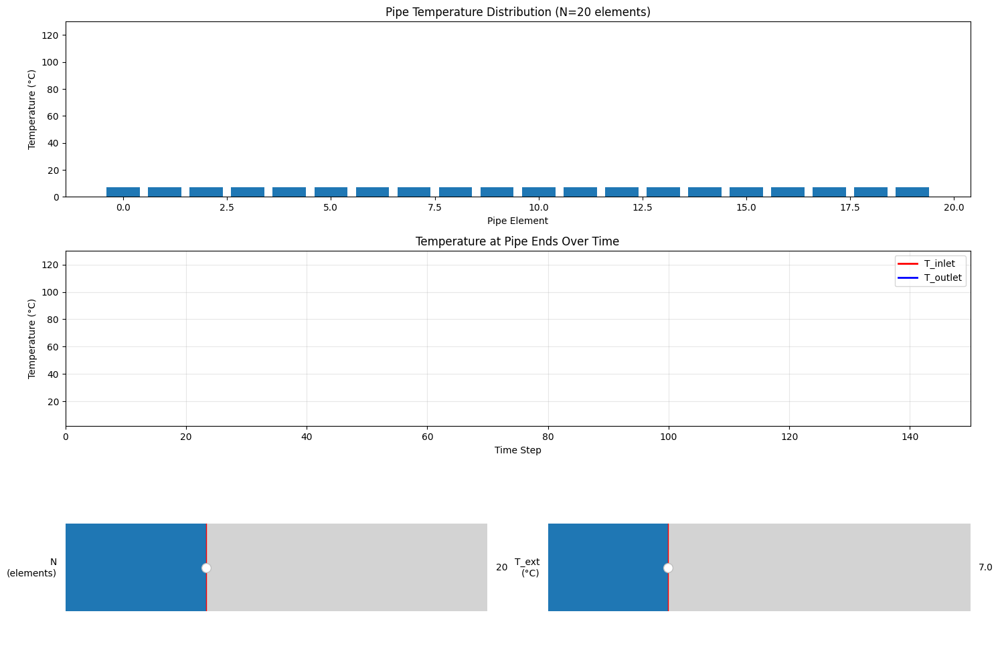

Simulation#
import matplotlib.pyplot as plt
import matplotlib.animation as animation
from matplotlib.colors import Normalize
from matplotlib.widgets import Slider, Button
import numpy as np
class InteractivePipeSimulation:
def __init__(self):
self.ani = None
self.pipe_temperature = []
self.is_running = False
def propagate_pipe(self, pipe_temperature: list[float]):
T_end = pipe_temperature.pop(-1) # Remove the last element
pipe_temperature.insert(0, T_end) # Insert it at the beginning
def update_pipe(self, pipe_temperature, loss_coeff, T_ext, T_heater, heat_coeff):
N = len(pipe_temperature)
new_temperatures = pipe_temperature.copy()
for i in range(1, N - 1):
new_temperatures[i] = (
pipe_temperature[i - 1]
+ pipe_temperature[i]
+ loss_coeff * T_ext
) / (2.0 + loss_coeff)
# Update the heater end
new_temperatures[0] = (heat_coeff * T_heater + pipe_temperature[0]) / (
heat_coeff + 1
)
return new_temperatures
def create_interactive_plot(self):
"""Create matplotlib-based interactive plot with sliders"""
# Create figure and subplots
self.fig = plt.figure(figsize=(15, 10))
# Main plots
self.ax1 = plt.subplot2grid((3, 2), (0, 0), colspan=2) # Temperature distribution
self.ax2 = plt.subplot2grid((3, 2), (1, 0), colspan=2) # Time series
# Slider areas
ax_N = plt.subplot2grid((3, 2), (2, 0))
ax_Text = plt.subplot2grid((3, 2), (2, 1))
# Create sliders
self.slider_N = Slider(ax_N, 'N\n(elements)', 5, 50, valinit=20, valfmt='%d')
self.slider_Text = Slider(ax_Text, 'T_ext\n(°C)', -10, 50, valinit=7, valfmt='%.1f')
# Initialize simulation parameters
self.T_heater = 120
self.t_max = 150
self.loss_coeff = 2e-2
self.heat_coeff = 0.5
self.current_time = 0
# Initialize data storage
self.times = []
self.T_start_history = []
self.T_end_history = []
# Setup initial simulation
self.reset_simulation()
# Connect slider events
self.slider_N.on_changed(self.update_params)
self.slider_Text.on_changed(self.update_params)
# Start animation
self.start_animation()
plt.tight_layout()
plt.show()
def reset_simulation(self):
"""Reset simulation with current parameters"""
N = int(self.slider_N.val)
T_ext = self.slider_Text.val
self.pipe_temperature = [T_ext] * N
self.current_time = 0
self.times = []
self.T_start_history = []
self.T_end_history = []
# Clear and setup plots
self.ax1.clear()
self.ax2.clear()
# Setup temperature distribution plot
self.bars = self.ax1.bar(range(N), self.pipe_temperature)
self.ax1.set_ylim(0, 130)
self.ax1.set_title(f'Pipe Temperature Distribution (N={N} elements)')
self.ax1.set_xlabel('Pipe Element')
self.ax1.set_ylabel('Temperature (°C)')
# Setup time series plot
self.line_start, = self.ax2.plot([], [], 'r-', linewidth=2, label='T_inlet')
self.line_end, = self.ax2.plot([], [], 'b-', linewidth=2, label='T_outlet')
self.ax2.set_xlim(0, self.t_max)
self.ax2.set_ylim(T_ext - 5, self.T_heater + 10)
self.ax2.set_title('Temperature at Pipe Ends Over Time')
self.ax2.set_xlabel('Time Step')
self.ax2.set_ylabel('Temperature (°C)')
self.ax2.grid(True, alpha=0.3)
self.ax2.legend()
# Color normalization
self.norm = Normalize(vmin=T_ext, vmax=self.T_heater)
def update_params(self, val):
"""Called when sliders change"""
self.reset_simulation()
def animate_frame(self, frame):
"""Animation function"""
if self.current_time >= self.t_max:
return
# Update pipe temperature
T_ext = self.slider_Text.val
self.pipe_temperature = self.update_pipe(
self.pipe_temperature, self.loss_coeff, T_ext, self.T_heater, self.heat_coeff
)
self.propagate_pipe(self.pipe_temperature)
# Update bar chart
for bar, temp in zip(self.bars, self.pipe_temperature):
bar.set_height(temp)
bar.set_color(plt.cm.jet(self.norm(temp)))
# Record temperatures
T_start = self.pipe_temperature[2] if len(self.pipe_temperature) > 2 else self.pipe_temperature[0]
T_end = self.pipe_temperature[0]
self.times.append(self.current_time)
self.T_start_history.append(T_start)
self.T_end_history.append(T_end)
# Update time series
self.line_start.set_data(self.times, self.T_start_history)
self.line_end.set_data(self.times, self.T_end_history)
# Adjust x-axis if needed
if self.current_time >= self.ax2.get_xlim()[1]:
self.ax2.set_xlim(0, self.current_time + self.t_max * 0.1)
self.current_time += 1
return self.bars + [self.line_start, self.line_end]
def start_animation(self):
"""Start the animation"""
if self.ani is not None:
self.ani.event_source.stop()
self.ani = animation.FuncAnimation(
self.fig,
self.animate_frame,
interval=100,
blit=False,
repeat=True,
cache_frame_data=False
)
# Simple function-based version for easy use
def run_interactive_pipe_simulation():
"""
Creates and runs an interactive pipe temperature simulation using matplotlib widgets.
Works without JavaScript - perfect for JupyterLab!
Controls:
- N slider: Number of pipe elements (5-50)
- T_ext slider: External temperature (-10°C to 50°C)
Usage in Jupyter cell:
run_interactive_pipe_simulation()
"""
# Enable interactive mode
plt.ion()
sim = InteractivePipeSimulation()
sim.create_interactive_plot()
return sim
# Alternative: Static plots with manual parameter input
def create_static_comparison():
"""
Create a static comparison showing multiple scenarios
"""
fig, axes = plt.subplots(2, 3, figsize=(18, 10))
# Different parameter combinations
scenarios = [
{'N': 10, 'T_ext': 5, 'title': 'N=10, T_ext=5°C'},
{'N': 20, 'T_ext': 5, 'title': 'N=20, T_ext=5°C'},
{'N': 30, 'T_ext': 5, 'title': 'N=30, T_ext=5°C'},
{'N': 20, 'T_ext': 0, 'title': 'N=20, T_ext=0°C'},
{'N': 20, 'T_ext': 15, 'title': 'N=20, T_ext=15°C'},
{'N': 20, 'T_ext': 25, 'title': 'N=20, T_ext=25°C'},
]
def run_single_simulation(N, T_ext, steps=150):
# Simulation parameters
T_heater = 120
loss_coeff = 2e-2
heat_coeff = 0.5
pipe_temperature = [T_ext] * N
# Storage for results
times = []
T_start_history = []
T_end_history = []
# Simulation functions (same as before)
def propagate_pipe(pipe_temp):
T_end = pipe_temp.pop(-1)
pipe_temp.insert(0, T_end)
def update_pipe(pipe_temp, loss_coeff, T_ext, T_heater, heat_coeff):
N = len(pipe_temp)
new_temps = pipe_temp.copy()
for i in range(1, N - 1):
new_temps[i] = (pipe_temp[i - 1] + pipe_temp[i] + loss_coeff * T_ext) / (2.0 + loss_coeff)
new_temps[0] = (heat_coeff * T_heater + pipe_temp[0]) / (heat_coeff + 1)
return new_temps
# Run simulation
for t in range(steps):
pipe_temperature = update_pipe(pipe_temperature, loss_coeff, T_ext, T_heater, heat_coeff)
propagate_pipe(pipe_temperature)
T_start = pipe_temperature[2] if len(pipe_temperature) > 2 else pipe_temperature[0]
T_end = pipe_temperature[0]
times.append(t)
T_start_history.append(T_start)
T_end_history.append(T_end)
return times, T_start_history, T_end_history, pipe_temperature
# Run and plot each scenario
for i, scenario in enumerate(scenarios):
row, col = divmod(i, 3)
ax = axes[row, col]
times, T_start_hist, T_end_hist, final_temps = run_single_simulation(
scenario['N'], scenario['T_ext']
)
ax.plot(times, T_start_hist, 'r-', label='T_inlet', linewidth=2)
ax.plot(times, T_end_hist, 'b-', label='T_outlet', linewidth=2)
ax.set_title(scenario['title'])
ax.set_xlabel('Time Step')
ax.set_ylabel('Temperature (°C)')
ax.grid(True, alpha=0.3)
ax.legend()
ax.set_ylim(scenario['T_ext'] - 5, 125)
plt.tight_layout()
plt.show()
if __name__ == "__main__":
run_interactive_pipe_simulation()
